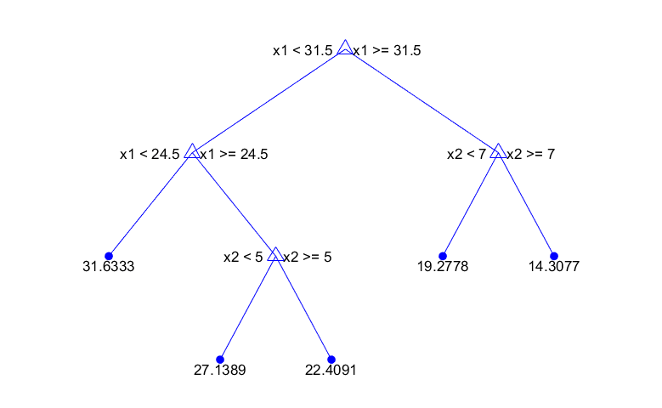

AREC 570 / ECON 530 · Unit 6
Readings and course handouts are available on Canvas.
Are we trying to:
The task determines how success should be evaluated.
Source: Athey and Imbens (2019).
A model can predict outcomes well using variables that do not cause them.
A causal question asks how outcomes change under an intervention.
Predictive accuracy alone does not justify changing a policy variable.
Examples: predicting demand versus grouping similar observations.
Both can contribute to economic research when the role is explicit.
A flexible model can fit noise in its training sample.
For forecasting, information from the future should not enter training.
Greater flexibility may reduce approximation bias while increasing variability.
Regularization constrains the fit to improve performance outside the training sample.
The best training fit is not necessarily the best predictive model.
A common form minimizes
A regression tree splits observations into groups with different predicted outcomes.
A random forest averages predictions across many randomized trees.

Source: Unit 6, slide 43.
A model predicts whether a household will miss a payment.
One input is “number of collection calls made during the following month.”
This is a hypothetical example.
Selecting variables only for predicting the outcome can omit variables important for treatment assignment.
The reading discusses selecting predictors of both outcome and treatment, then using their union in an appropriate estimation procedure.
This still depends on the underlying identification assumptions.
Flexible methods may estimate nuisance relationships such as:
Sample splitting and specialized inference can help manage overfitting.
Machine learning does not supply exogenous variation by itself.
Specify:
Complete: “This method can improve , but it does not by itself establish .”
AREC 570 / ECON 530 · Methodology of Economic Research